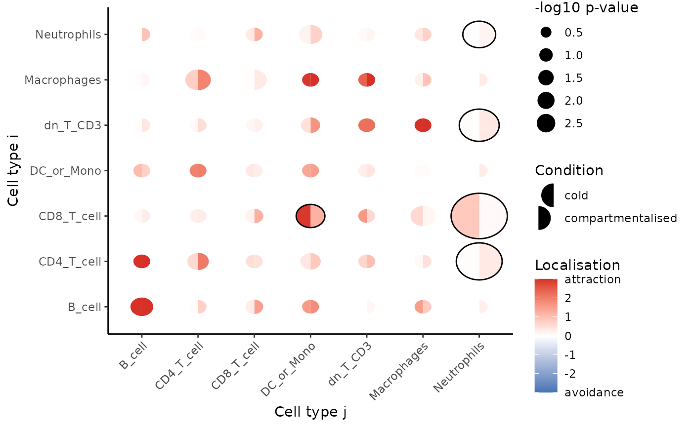

Spatial Linear and Mixed-Effects Modelling with spicy
Nicolas Canete
Westmead Institute for Medical Research, University of Sydney, Australianicolas.canete@sydney.edu.au
Ellis Patrick
Westmead Institute for Medical Research, University of Sydney, AustraliaSchool of Mathematics and Statistics, University of Sydney, AustraliaAlex Qin
Westmead Institute for Medical Research, University of Sydney, AustraliaSchool of Mathematics and Statistics, University of Sydney, Australia11 September 2024
Source:vignettes/spicyR.Rmd
spicyR.RmdAbstract
Perform linear and mixed-effects models to assess and visualise changes in cell localisation across disease conditions.
Installation
if (!require("BiocManager")) {
install.packages("BiocManager")
}
BiocManager::install("spicyR")
# load required packages
library(spicyR)
library(ggplot2)
library(SpatialExperiment)
library(SpatialDatasets)
library(imcRtools)Overview
This guide provides step-by-step instructions on how to apply a linear model to multiple segmented and labelled images to assess how the localisation of different cell types changes across different disease conditions.
Example data
We use the Keren et al. (2018) breast cancer dataset to compare the spatial distribution of immune cells in individuals with different levels of tumour infiltration (cold and compartmentalised).
The data is stored as a SpatialExperiment object and
contains single-cell spatial data from 41 images.
kerenSPE <- SpatialDatasets::spe_Keren_2018()The cell types in this dataset includes 11 immune cell types (double negative CD3 T cells, CD4 T cells, B cells, monocytes, macrophages, CD8 T cells, neutrophils, natural killer cells, dendritic cells, regulatory T cells), 2 structural cell types (endothelial, mesenchymal), 2 tumour cell types (keratin+ tumour, tumour) and one unidentified category.
Linear modelling
To investigate changes in localisation between two different cell types, we measure the level of localisation between two cell types by modelling with the L-function. The L-function is a variance-stabilised K-function given by the equation
with defined as
where summarises the degree of co-localisation of cell type with cell type , and are the number of cells of type and , is the image area, is the distance between two cells and is an edge correcting factor.
Specifically, the mean difference between the experimental function and the theoretical function is used as a measure for the level of localisation, defined as
where is the sum is taken over a discrete range of between and . Differences of the statistic between two conditions is modelled using a weighted linear model.
Test for change in localisation for a specific pair of cells
Firstly, we can test whether one cell type tends to be more localised
with another cell type in one condition compared to the other. This can
be done using the spicy() function, where we specify the
condition parameter.
In this example, we want to see whether or not neutrophils
(to) tend to be found around CD8 T cells
(from) in compartmentalised tumours compared to cold
tumours. Given that there are 3 conditions, we can specify the desired
conditions by setting the order of our condition factor.
spicy will choose the first level of the factor as the base
condition and the second level as the comparison condition.
spicy will also naturally coerce the condition
column into a factor if it is not already a factor. The column
containing cell type annotations can be specified using the
cellTypeCol argument. By default, spicy uses
the column named cellType in the
SpatialExperiment object.
spicyTestPair <- spicy(
kerenSPE,
condition = "tumour_type",
from = "CD8_T_cell",
to = "Neutrophils"
)
topPairs(spicyTestPair)
#> intercept coefficient p.value adj.pvalue
#> CD8_T_cell__Neutrophils -109.081 112.0185 2.166646e-05 2.166646e-05
#> from to
#> CD8_T_cell__Neutrophils CD8_T_cell NeutrophilsWe obtain a spicy object which details the results of
the modelling performed. The topPairs() function can be
used to obtain the associated coefficients and p-value.
As the coefficient in spicyTestPair is
positive, we find that neutrophils are significantly more likely to be
found near CD8 T cells in the compartmentalised tumours group compared
to the cold tumour group.
Test for change in localisation for all pairwise cell combinations
We can perform what we did above for all pairwise combinations of
cell types by excluding the from and to
parameters in spicy().
spicyTest <- spicy(
kerenSPE,
condition = "tumour_type"
)
topPairs(spicyTest)
#> intercept coefficient p.value adj.pvalue
#> Macrophages__dn_T_CD3 56.446064 -50.08474 1.080273e-07 3.035568e-05
#> dn_T_CD3__Macrophages 54.987151 -48.38664 2.194018e-07 3.082595e-05
#> Macrophages__DC_or_Mono 73.239404 -59.90361 5.224660e-06 4.893765e-04
#> DC_or_Mono__Macrophages 71.777087 -58.46833 7.431172e-06 5.220399e-04
#> dn_T_CD3__dn_T_CD3 -63.786032 100.61010 2.878804e-05 1.208706e-03
#> Neutrophils__dn_T_CD3 -63.141840 69.64356 2.891872e-05 1.208706e-03
#> dn_T_CD3__Neutrophils -63.133725 70.15508 3.011012e-05 1.208706e-03
#> DC__Macrophages 96.893239 -92.55112 1.801300e-04 5.758129e-03
#> Macrophages__DC 96.896215 -93.25194 1.844241e-04 5.758129e-03
#> CD4_T_cell__Keratin_Tumour -4.845037 -22.14995 2.834659e-04 7.409016e-03
#> from to
#> Macrophages__dn_T_CD3 Macrophages dn_T_CD3
#> dn_T_CD3__Macrophages dn_T_CD3 Macrophages
#> Macrophages__DC_or_Mono Macrophages DC_or_Mono
#> DC_or_Mono__Macrophages DC_or_Mono Macrophages
#> dn_T_CD3__dn_T_CD3 dn_T_CD3 dn_T_CD3
#> Neutrophils__dn_T_CD3 Neutrophils dn_T_CD3
#> dn_T_CD3__Neutrophils dn_T_CD3 Neutrophils
#> DC__Macrophages DC Macrophages
#> Macrophages__DC Macrophages DC
#> CD4_T_cell__Keratin_Tumour CD4_T_cell Keratin_TumourAgain, we obtain a spicy object which outlines the
result of the linear models performed for each pairwise combination of
cell types.
We can also examine the L-function metrics of individual images by
using the convenient bind() function on our
spicyTest results object.
bind(spicyTest)[1:5, 1:5]
#> imageID condition Keratin_Tumour__Keratin_Tumour
#> 1 1 mixed -2.300602
#> 2 2 mixed -1.989699
#> 3 3 compartmentalised 11.373530
#> 4 4 compartmentalised 33.931133
#> 5 5 compartmentalised 17.922818
#> dn_T_CD3__Keratin_Tumour B_cell__Keratin_Tumour
#> 1 -5.298543 -20.827279
#> 2 -16.020022 3.025815
#> 3 -21.857447 -24.962913
#> 4 -36.438476 -40.470221
#> 5 -20.816783 -38.138076The results can be represented as a bubble plot using the
signifPlot() function.
signifPlot(
spicyTest,
breaks = c(-3, 3, 1),
marksToPlot = c("Macrophages", "DC_or_Mono", "dn_T_CD3", "Neutrophils",
"CD8_T_cell", "Keratin_Tumour")
)
Here, we can observe that the most significant relationships occur between macrophages and double negative CD3 T cells, suggesting that the two cell types are far more dispersed in compartmentalised tumours compared to cold tumours.
To examine a specific cell type-cell type relationship in more
detail, we can use spicyBoxplot() and specify either
from = "Macrophages" and to = "dn_T_CD3" or
rank = 1.
spicyBoxPlot(results = spicyTest,
# from = "Macrophages",
# to = "dn_T_CD3"
rank = 1)Linear modelling for custom metrics
spicyR can also be applied to custom distance or
abundance metrics. A kNN interactions graph can be generated with the
function buildSpatialGraph from the imcRtools
package. This generates a colPairs object inside of the
SpatialExperiment object.
spicyR provides the function convPairs for
converting a colPairs object into an abundance matrix by
calculating the average number of nearby cells types for every cell type
for a given k. For example, if there exists on average 5
neutrophils for every macrophage in image 1, the column
neutrophil__macrophage would have a value of 5 for image
1.
kerenSPE <- imcRtools::buildSpatialGraph(kerenSPE,
img_id = "imageID",
type = "knn", k = 20,
coords = c("x", "y"))
pairAbundances <- convPairs(kerenSPE,
colPair = "knn_interaction_graph")
head(pairAbundances["B_cell__B_cell"])
#> B_cell__B_cell
#> 1 12.7349608
#> 10 0.2777778
#> 11 0.0000000
#> 12 1.3333333
#> 13 1.2200957
#> 14 0.0000000The custom distance or abundance metrics can then be included in the
analysis with the alternateResult parameter. The
Statial package contains other custom distance metrics
which can be used with spicy.
spicyTestColPairs <- spicy(
kerenSPE,
condition = "tumour_type",
alternateResult = pairAbundances,
weights = FALSE
)
topPairs(spicyTestColPairs)
#> intercept coefficient p.value adj.pvalue
#> CD8_T_cell__Neutrophils 0.833333333 -0.7592968 0.002645466 0.3291833
#> B_cell__Tumour 0.001937984 0.2602822 0.004872664 0.3291833
#> Other_Immune__NK 0.012698413 0.2612881 0.005673068 0.3291833
#> Unidentified__CD8_T_cell 0.106626794 0.6387339 0.005906526 0.3291833
#> dn_T_CD3__NK 0.004242424 0.2148797 0.006317829 0.3291833
#> CD4_T_cell__Neutrophils 0.036213602 0.2947696 0.007902670 0.3291833
#> Tregs__CD4_T_cell 0.128876212 0.5726201 0.010207087 0.3291833
#> Endothelial__DC 0.008771930 0.3008523 0.011189533 0.3291833
#> Tumour__Neutrophils 0.021638939 0.2529045 0.011388850 0.3291833
#> Mesenchymal__Neutrophils 0.004504505 0.2494301 0.012761315 0.3291833
#> from to
#> CD8_T_cell__Neutrophils CD8_T_cell Neutrophils
#> B_cell__Tumour B_cell Tumour
#> Other_Immune__NK Other_Immune NK
#> Unidentified__CD8_T_cell Unidentified CD8_T_cell
#> dn_T_CD3__NK dn_T_CD3 NK
#> CD4_T_cell__Neutrophils CD4_T_cell Neutrophils
#> Tregs__CD4_T_cell Tregs CD4_T_cell
#> Endothelial__DC Endothelial DC
#> Tumour__Neutrophils Tumour Neutrophils
#> Mesenchymal__Neutrophils Mesenchymal Neutrophils
signifPlot(
spicyTestColPairs,
breaks = c(-3, 3, 1),
marksToPlot = c("Macrophages", "dn_T_CD3", "CD4_T_cell",
"B_cell", "DC_or_Mono", "Neutrophils", "CD8_T_cell")
)
Mixed effects modelling
spicyR supports mixed effects modelling when multiple
images are obtained for each subject. In this case, subject
is treated as a random effect and condition is treated as a
fixed effect. To perform mixed effects modelling, we can specify the
subject parameter in the spicy function.
spicyMixedTest <- spicy(
diabetesData,
condition = "stage",
subject = "case"
)References
sessionInfo()
#> R version 4.4.1 (2024-06-14)
#> Platform: x86_64-pc-linux-gnu
#> Running under: Ubuntu 22.04.4 LTS
#>
#> Matrix products: default
#> BLAS: /usr/lib/x86_64-linux-gnu/openblas-pthread/libblas.so.3
#> LAPACK: /usr/lib/x86_64-linux-gnu/openblas-pthread/libopenblasp-r0.3.20.so; LAPACK version 3.10.0
#>
#> locale:
#> [1] LC_CTYPE=C.UTF-8 LC_NUMERIC=C LC_TIME=C.UTF-8
#> [4] LC_COLLATE=C.UTF-8 LC_MONETARY=C.UTF-8 LC_MESSAGES=C.UTF-8
#> [7] LC_PAPER=C.UTF-8 LC_NAME=C LC_ADDRESS=C
#> [10] LC_TELEPHONE=C LC_MEASUREMENT=C.UTF-8 LC_IDENTIFICATION=C
#>
#> time zone: UTC
#> tzcode source: system (glibc)
#>
#> attached base packages:
#> [1] stats4 stats graphics grDevices utils datasets methods
#> [8] base
#>
#> other attached packages:
#> [1] imcRtools_1.10.0 SpatialDatasets_1.2.0
#> [3] ExperimentHub_2.12.0 AnnotationHub_3.12.0
#> [5] BiocFileCache_2.12.0 dbplyr_2.5.0
#> [7] SpatialExperiment_1.14.0 SingleCellExperiment_1.26.0
#> [9] SummarizedExperiment_1.34.0 Biobase_2.64.0
#> [11] GenomicRanges_1.56.1 GenomeInfoDb_1.40.1
#> [13] IRanges_2.38.1 S4Vectors_0.42.1
#> [15] BiocGenerics_0.50.0 MatrixGenerics_1.16.0
#> [17] matrixStats_1.4.1 ggplot2_3.5.1
#> [19] spicyR_1.17.4 BiocStyle_2.32.1
#>
#> loaded via a namespace (and not attached):
#> [1] fs_1.6.4 spatstat.sparse_3.1-0
#> [3] bitops_1.0-8 sf_1.0-17
#> [5] EBImage_4.46.0 httr_1.4.7
#> [7] RColorBrewer_1.1-3 numDeriv_2016.8-1.1
#> [9] tools_4.4.1 backports_1.5.0
#> [11] utf8_1.2.4 R6_2.5.1
#> [13] DT_0.33 HDF5Array_1.32.1
#> [15] mgcv_1.9-1 rhdf5filters_1.16.0
#> [17] withr_3.0.1 sp_2.1-4
#> [19] gridExtra_2.3 ClassifyR_3.8.3
#> [21] cli_3.6.3 textshaping_0.4.0
#> [23] spatstat.explore_3.3-2 labeling_0.4.3
#> [25] sass_0.4.9 nnls_1.5
#> [27] spatstat.data_3.1-2 readr_2.1.5
#> [29] proxy_0.4-27 pkgdown_2.1.0
#> [31] systemfonts_1.1.0 ggupset_0.4.0
#> [33] svglite_2.1.3 RSQLite_2.3.7
#> [35] generics_0.1.3 vroom_1.6.5
#> [37] spatstat.random_3.3-1 car_3.1-2
#> [39] dplyr_1.1.4 scam_1.2-17
#> [41] Matrix_1.7-0 ggbeeswarm_0.7.2
#> [43] fansi_1.0.6 abind_1.4-5
#> [45] terra_1.7-78 lifecycle_1.0.4
#> [47] yaml_2.3.10 carData_3.0-5
#> [49] rhdf5_2.48.0 SparseArray_1.4.8
#> [51] grid_4.4.1 blob_1.2.4
#> [53] promises_1.3.0 crayon_1.5.3
#> [55] shinydashboard_0.7.2 lattice_0.22-6
#> [57] beachmat_2.20.0 KEGGREST_1.44.1
#> [59] magick_2.8.4 cytomapper_1.16.0
#> [61] pillar_1.9.0 knitr_1.48
#> [63] RTriangle_1.6-0.14 rjson_0.2.22
#> [65] boot_1.3-30 codetools_0.2-20
#> [67] glue_1.7.0 spatstat.univar_3.0-1
#> [69] data.table_1.16.0 MultiAssayExperiment_1.30.3
#> [71] vctrs_0.6.5 png_0.1-8
#> [73] gtable_0.3.5 cachem_1.1.0
#> [75] xfun_0.47 S4Arrays_1.4.1
#> [77] mime_0.12 tidygraph_1.3.1
#> [79] survival_3.6-4 pheatmap_1.0.12
#> [81] units_0.8-5 nlme_3.1-164
#> [83] bit64_4.0.5 filelock_1.0.3
#> [85] bslib_0.8.0 svgPanZoom_0.3.4
#> [87] KernSmooth_2.23-24 vipor_0.4.7
#> [89] colorspace_2.1-1 DBI_1.2.3
#> [91] raster_3.6-26 tidyselect_1.2.1
#> [93] extrafontdb_1.0 bit_4.0.5
#> [95] compiler_4.4.1 curl_5.2.2
#> [97] BiocNeighbors_1.22.0 desc_1.4.3
#> [99] DelayedArray_0.30.1 bookdown_0.40
#> [101] scales_1.3.0 classInt_0.4-10
#> [103] distances_0.1.11 rappdirs_0.3.3
#> [105] tiff_0.1-12 stringr_1.5.1
#> [107] digest_0.6.37 goftest_1.2-3
#> [109] fftwtools_0.9-11 spatstat.utils_3.1-0
#> [111] minqa_1.2.8 rmarkdown_2.28
#> [113] XVector_0.44.0 htmltools_0.5.8.1
#> [115] pkgconfig_2.0.3 jpeg_0.1-10
#> [117] extrafont_0.19 lme4_1.1-35.5
#> [119] sparseMatrixStats_1.16.0 highr_0.11
#> [121] fastmap_1.2.0 rlang_1.1.4
#> [123] htmlwidgets_1.6.4 UCSC.utils_1.0.0
#> [125] shiny_1.9.1 DelayedMatrixStats_1.26.0
#> [127] farver_2.1.2 jquerylib_0.1.4
#> [129] jsonlite_1.8.8 BiocParallel_1.38.0
#> [131] RCurl_1.98-1.16 magrittr_2.0.3
#> [133] scuttle_1.14.0 GenomeInfoDbData_1.2.12
#> [135] Rhdf5lib_1.26.0 munsell_0.5.1
#> [137] Rcpp_1.0.13 viridis_0.6.5
#> [139] stringi_1.8.4 ggraph_2.2.1
#> [141] zlibbioc_1.50.0 MASS_7.3-60.2
#> [143] plyr_1.8.9 parallel_4.4.1
#> [145] ggrepel_0.9.6 deldir_2.0-4
#> [147] Biostrings_2.72.1 graphlayouts_1.1.1
#> [149] splines_4.4.1 tensor_1.5
#> [151] hms_1.1.3 locfit_1.5-9.10
#> [153] igraph_2.0.3 ggpubr_0.6.0
#> [155] spatstat.geom_3.3-2 ggsignif_0.6.4
#> [157] reshape2_1.4.4 BiocVersion_3.19.1
#> [159] evaluate_0.24.0 BiocManager_1.30.25
#> [161] nloptr_2.1.1 tzdb_0.4.0
#> [163] tweenr_2.0.3 httpuv_1.6.15
#> [165] Rttf2pt1_1.3.12 tidyr_1.3.1
#> [167] purrr_1.0.2 polyclip_1.10-7
#> [169] ggforce_0.4.2 broom_1.0.6
#> [171] xtable_1.8-4 e1071_1.7-14
#> [173] rstatix_0.7.2 later_1.3.2
#> [175] class_7.3-22 viridisLite_0.4.2
#> [177] ragg_1.3.2 tibble_3.2.1
#> [179] lmerTest_3.1-3 memoise_2.0.1
#> [181] beeswarm_0.4.0 AnnotationDbi_1.66.0
#> [183] concaveman_1.1.0